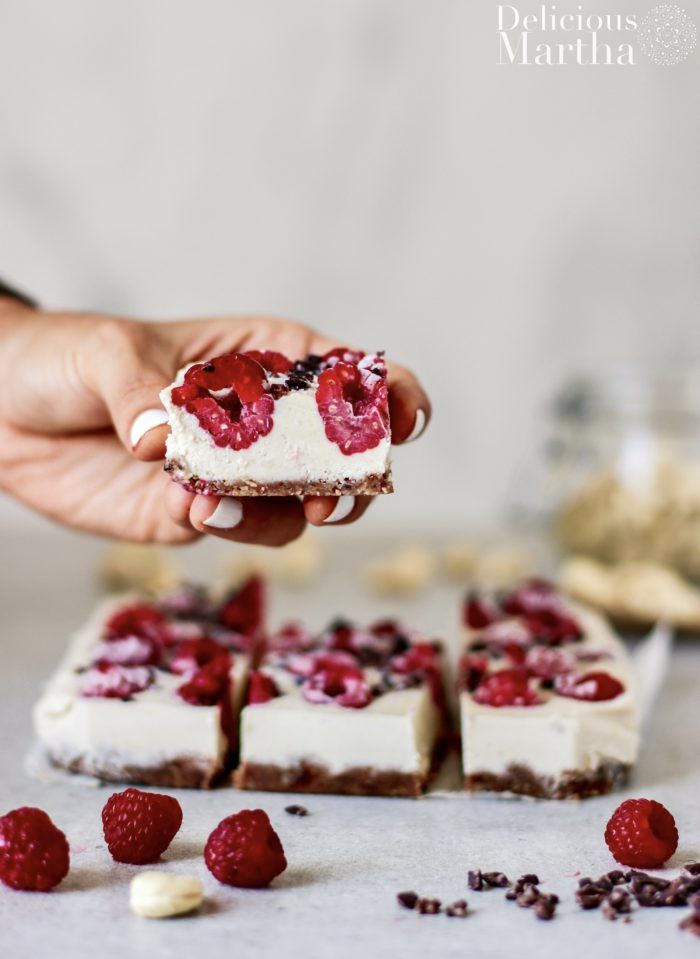
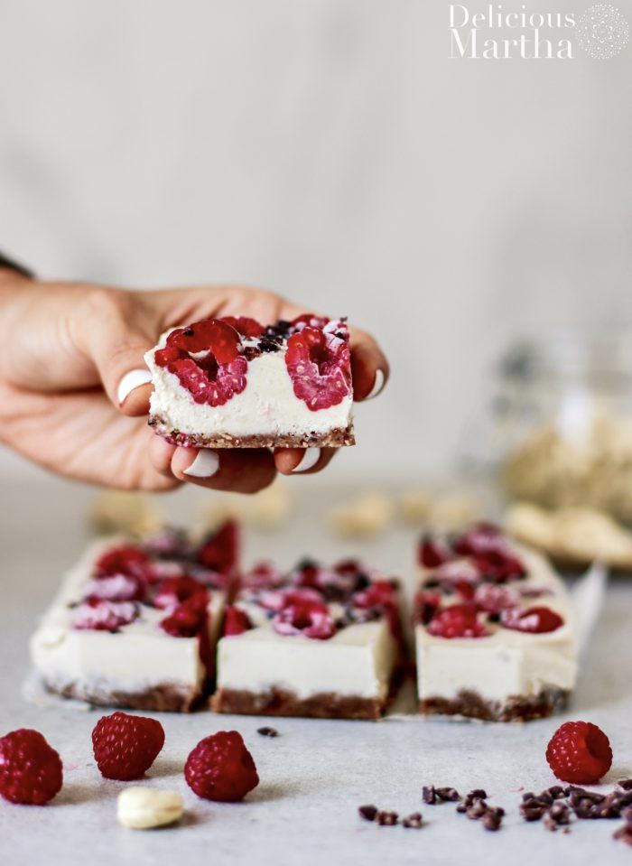

Barritas Heladas
 

Ingredientes
- 2 Bananas
- 250g. yogurt natural
- Pasta de mani
- Frutos Secos
- Granola
- Barrita de chocolate amargo
- Arandanos
- Frutillas
Preparacion
- Corto las dos bananas a la mitad y a lo largo
- Las coloco en una budinera con film por debajo
- Colocar la pasta de mani (la cantidad que quieras)
- Agregar el yogurt natural
- Agregar la granola
- Sobre la granola, agregar los frutos secos, los arandanos y la frutilla
- Picar la barrita de chocolate y agregar a la mezcla
- Llevar la mezcla al frezzer por 3 horas (hasta que este congelado)
- Por ultimo, desmoldar la mezcla y cortar en porciones
inicio